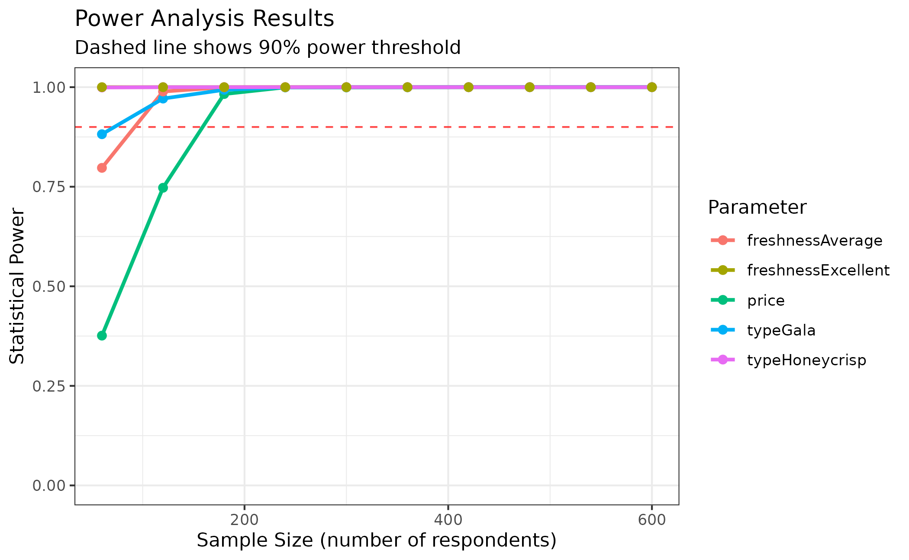

Power analysis determines the sample size needed to reliably detect
effects of a given magnitude in your choice experiment. By simulating
choice data and estimating models at different sample sizes, you can
identify the minimum number of respondents needed to achieve your
desired level of statistical precision. This article shows how to
conduct power analyses using cbc_power().
Before starting, let’s define some basic profiles, a basic random design, some priors, and some simulated choices to work with:
library(cbcTools)
# Create example data for power analysis
profiles <- cbc_profiles(
price = c(1, 1.5, 2, 2.5, 3),
type = c('Fuji', 'Gala', 'Honeycrisp'),
freshness = c('Poor', 'Average', 'Excellent')
)
# Create design and simulate choices
design <- cbc_design(
profiles = profiles,
n_alts = 2,
n_q = 6,
n_resp = 600, # Large sample for power analysis
method = "random"
)
priors <- cbc_priors(
profiles = profiles,
price = -0.25,
type = c(0.5, 1.0),
freshness = c(0.6, 1.2)
)
choices <- cbc_choices(design, priors = priors)
head(choices)
#> CBC Choice Data
#> ===============
#> Observations: 3 choice tasks
#> Alternatives per task: 2
#> Total choices made: 3
#>
#> Simulation method: utility_based
#> Priors: Used for utility-based simulation
#> Simulated at: 2025-07-08 11:18:02
#>
#> Choice rates by alternative:
#> Alt 1: 66.7% (2 choices)
#> Alt 2: 33.3% (1 choices)
#>
#> First few rows:
#> profileID respID qID altID obsID price typeGala typeHoneycrisp
#> 1 31 1 1 1 1 1.0 0 0
#> 2 15 1 1 2 1 3.0 0 1
#> 3 14 1 2 1 2 2.5 0 1
#> 4 3 1 2 2 2 2.0 0 0
#> 5 42 1 3 1 3 1.5 0 1
#> 6 43 1 3 2 3 2.0 0 1
#> freshnessAverage freshnessExcellent choice
#> 1 0 1 0
#> 2 0 0 1
#> 3 0 0 1
#> 4 0 0 0
#> 5 0 1 1
#> 6 0 1 0Understanding Power Analysis
What is Statistical Power?
Statistical power is the probability of correctly detecting an effect when it truly exists. In choice experiments, power depends on:
- Effect size: Larger effects are easier to detect
- Sample size: More respondents provide more precision
- Design efficiency: Better designs extract more information per respondent
- Model complexity: More parameters require larger samples
Why Conduct Power Analysis?
- Sample size planning: Determine minimum respondents needed
- Budget planning: Estimate data collection costs
- Design comparison: Choose between alternative experimental designs
- Feasibility assessment: Check if research questions are answerable with available resources
Power vs. Precision
Power analysis in cbc_power() focuses on
precision (standard errors) rather than traditional
hypothesis testing power, because:
- Provides more actionable information for sample size planning
- Relevant for both significant and non-significant results
- Easier to interpret across different effect sizes
- More directly tied to practical research needs
Basic Power Analysis
Start with a basic power analysis using auto-detection of parameters:
# Basic power analysis with auto-detected parameters
power_basic <- cbc_power(
data = choices,
outcome = "choice",
obsID = "obsID",
n_q = 6,
n_breaks = 10
)
# View the power analysis object
power_basic
#> CBC Power Analysis Results
#> ==========================
#>
#> Sample sizes tested: 60 to 600 (10 breaks)
#> Significance level: 0.050
#> Parameters: price, typeGala, typeHoneycrisp, freshnessAverage, freshnessExcellent
#>
#> Power summary (probability of detecting true effect):
#>
#> n = 60:
#> price : Power = 0.376, SE = 0.1163
#> typeGala : Power = 0.882, SE = 0.2116
#> typeHoneycrisp: Power = 0.999, SE = 0.2144
#> freshnessAverage: Power = 0.797, SE = 0.2052
#> freshnessExcellent: Power = 1.000, SE = 0.2244
#>
#> n = 180:
#> price : Power = 0.983, SE = 0.0667
#> typeGala : Power = 0.993, SE = 0.1137
#> typeHoneycrisp: Power = 1.000, SE = 0.1194
#> freshnessAverage: Power = 1.000, SE = 0.1147
#> freshnessExcellent: Power = 1.000, SE = 0.1205
#>
#> n = 360:
#> price : Power = 1.000, SE = 0.0463
#> typeGala : Power = 1.000, SE = 0.0807
#> typeHoneycrisp: Power = 1.000, SE = 0.0841
#> freshnessAverage: Power = 1.000, SE = 0.0831
#> freshnessExcellent: Power = 1.000, SE = 0.0872
#>
#> n = 480:
#> price : Power = 1.000, SE = 0.0403
#> typeGala : Power = 1.000, SE = 0.0694
#> typeHoneycrisp: Power = 1.000, SE = 0.0728
#> freshnessAverage: Power = 1.000, SE = 0.0714
#> freshnessExcellent: Power = 1.000, SE = 0.0741
#>
#> n = 600:
#> price : Power = 1.000, SE = 0.0362
#> typeGala : Power = 1.000, SE = 0.0620
#> typeHoneycrisp: Power = 1.000, SE = 0.0655
#> freshnessAverage: Power = 1.000, SE = 0.0638
#> freshnessExcellent: Power = 1.000, SE = 0.0668
#>
#> Use plot() to visualize power curves.
#> Use summary() for detailed power analysis.
# Access the detailed results data frame
head(power_basic$power_summary)
#> sample_size parameter estimate std_error t_statistic power
#> 1 60 price -0.1910977 0.11625005 1.643850 0.3761148
#> 2 60 typeGala 0.6653365 0.21160734 3.144203 0.8818410
#> 3 60 typeHoneycrisp 1.0970572 0.21442926 5.116173 0.9992008
#> 4 60 freshnessAverage 0.5729977 0.20520714 2.792289 0.7973884
#> 5 60 freshnessExcellent 1.4156784 0.22440157 6.308683 0.9999932
#> 6 120 price -0.2159881 0.08224018 2.626309 0.7474069
tail(power_basic$power_summary)
#> sample_size parameter estimate std_error t_statistic power
#> 45 540 freshnessExcellent 1.1001963 0.07013045 15.687856 1
#> 46 600 price -0.2852389 0.03622604 7.873862 1
#> 47 600 typeGala 0.5435753 0.06197232 8.771259 1
#> 48 600 typeHoneycrisp 1.0169146 0.06550545 15.524122 1
#> 49 600 freshnessAverage 0.6440423 0.06384102 10.088220 1
#> 50 600 freshnessExcellent 1.1218315 0.06676258 16.803298 1Parameter Specification Options
Auto-Detection (Recommended)
By default, cbc_power() automatically detects all
attribute parameters from your choice data:
# Auto-detection works with dummy-coded data
power_auto <- cbc_power(
data = choices,
outcome = "choice",
obsID = "obsID",
n_q = 6,
n_breaks = 8
)
# Shows all parameters: price, typeGala, typeHoneycrisp, freshnessAverage, freshnessExcellentUse Decoded Data with Attribute Names
For easier interpretation, decode the choice data first to use original attribute names:
# Decode choice data to get back categorical variables
choices_decoded <- cbc_decode(choices)
# Now you can use attribute names instead of dummy variables
power_decoded <- cbc_power(
data = choices_decoded,
pars = c("price", "type", "freshness"), # Original attribute names
outcome = "choice",
obsID = "obsID",
n_q = 6,
n_breaks = 8
)
# Note: This approach estimates effects differently -
# it treats categorical variables as factors rather than separate dummy variablesWhen to Use Each Approach
- Auto-detection: Best for comprehensive power analysis of all effects
- Dummy-coded specification: When you want to focus on specific levels of categorical variables
- Decoded data: When you want power analysis at the attribute level rather than level-specific effects, or for easier interpretation
Understanding Power Results
The power analysis returns a list object with several components:
-
power_summary: Data frame with sample sizes, coefficients, estimates, standard errors, t-statistics, and power -
sample_sizes: Vector of sample sizes tested
-
n_breaks: Number of breaks used -
alpha: Significance level used -
choice_info: Information about the underlying choice simulation
The power_summary data frame contains:
- sample_size: Number of respondents in each analysis
- parameter: Parameter name being estimated
- estimate: Coefficient estimate
- std_error: Standard error of the estimate
- t_statistic: t-statistic (estimate/std_error)
- power: Statistical power (probability of detecting effect)
Visualizing Power Curves
Plot power curves to visualize the relationship between sample size and precision:
# Plot power curves
plot(
power_basic,
type = "power",
power_threshold = 0.9
)
# Plot standard error curves
plot(
power_basic,
type = "se"
)Interpreting Results
# Sample size requirements for 90% power
summary(
power_basic,
power_threshold = 0.9
)
#> CBC Power Analysis Summary
#> ===========================
#>
#> Sample size requirements for 90% power:
#>
#> price : n >= 180 (achieves 98.3% power, SE = 0.0667)
#> typeGala : n >= 120 (achieves 97.1% power, SE = 0.1394)
#> typeHoneycrisp : n >= 60 (achieves 99.9% power, SE = 0.2144)
#> freshnessAverage: n >= 120 (achieves 98.9% power, SE = 0.1426)
#> freshnessExcellent: n >= 60 (achieves 100.0% power, SE = 0.2244)From these results, you can determine:
- Which parameters need the largest samples
- Whether your planned sample size is adequate
- How much precision improves with additional respondents
Mixed Logit Models
Conduct power analysis for random parameter models:
# Create choices with random parameters
priors_random <- cbc_priors(
profiles = profiles,
price = rand_spec(
dist = "n",
mean = -0.25,
sd = 0.1
),
type = rand_spec(
dist = "n",
mean = c(0.5, 1.0),
sd = c(0.5, 0.5)
),
freshness = c(0.6, 1.2)
)
choices_mixed <- cbc_choices(
design,
priors = priors_random
)
# Power analysis for mixed logit model
power_mixed <- cbc_power(
data = cbc_decode(choices_mixed),
pars = c("price", "type", "freshness"),
randPars = c(price = "n", type = "n"), # Specify random parameters
outcome = "choice",
obsID = "obsID",
panelID = "respID", # Required for panel data
n_q = 6,
n_breaks = 10
)
# Mixed logit models generally require larger samples
power_mixed
#> CBC Power Analysis Results
#> ==========================
#>
#> Sample sizes tested: 60 to 600 (10 breaks)
#> Significance level: 0.050
#> Parameters: price, typeGala, typeHoneycrisp, freshnessAverage, freshnessExcellent, sd_price, sd_typeGala, sd_typeHoneycrisp
#>
#> Power summary (probability of detecting true effect):
#>
#> n = 60:
#> price : Power = 0.806, SE = 0.1315
#> typeGala : Power = 0.907, SE = 0.2277
#> typeHoneycrisp: Power = 0.999, SE = 0.2483
#> freshnessAverage: Power = 0.773, SE = 0.2155
#> freshnessExcellent: Power = 1.000, SE = 0.2434
#> sd_price : Power = 0.131, SE = 0.3657
#> sd_typeGala : Power = 0.137, SE = 0.5345
#> sd_typeHoneycrisp: Power = 0.050, SE = 0.8205
#>
#> n = 180:
#> price : Power = 0.976, SE = 0.0726
#> typeGala : Power = 1.000, SE = 0.1190
#> typeHoneycrisp: Power = 1.000, SE = 0.1309
#> freshnessAverage: Power = 0.917, SE = 0.1150
#> freshnessExcellent: Power = 1.000, SE = 0.1255
#> sd_price : Power = 0.050, SE = 0.3522
#> sd_typeGala : Power = 0.050, SE = 0.3891
#> sd_typeHoneycrisp: Power = 0.051, SE = 0.9933
#>
#> n = 360:
#> price : Power = 1.000, SE = 0.0479
#> typeGala : Power = 1.000, SE = 0.0837
#> typeHoneycrisp: Power = 1.000, SE = 0.0902
#> freshnessAverage: Power = 1.000, SE = 0.0820
#> freshnessExcellent: Power = 1.000, SE = 0.0871
#> sd_price : Power = 0.050, SE = 0.1573
#> sd_typeGala : Power = 0.050, SE = 0.4394
#> sd_typeHoneycrisp: Power = 0.050, SE = 0.4378
#>
#> n = 480:
#> price : Power = 1.000, SE = 0.0417
#> typeGala : Power = 1.000, SE = 0.0716
#> typeHoneycrisp: Power = 1.000, SE = 0.0754
#> freshnessAverage: Power = 1.000, SE = 0.0709
#> freshnessExcellent: Power = 1.000, SE = 0.0744
#> sd_price : Power = 0.050, SE = 0.1469
#> sd_typeGala : Power = 0.050, SE = 0.3126
#> sd_typeHoneycrisp: Power = 0.050, SE = 0.2305
#>
#> n = 600:
#> price : Power = 1.000, SE = 0.0384
#> typeGala : Power = 1.000, SE = 0.0691
#> typeHoneycrisp: Power = 1.000, SE = 0.0672
#> freshnessAverage: Power = 1.000, SE = 0.0631
#> freshnessExcellent: Power = 1.000, SE = 0.0667
#> sd_price : Power = 0.051, SE = 0.2043
#> sd_typeGala : Power = 0.050, SE = 0.5980
#> sd_typeHoneycrisp: Power = 0.050, SE = 0.1851
#>
#> Use plot() to visualize power curves.
#> Use summary() for detailed power analysis.Comparing Design Performance
Design Method Comparison
Compare power across different design methods:
# Create designs with different methods
design_random <- cbc_design(
profiles,
n_alts = 2,
n_q = 6,
n_resp = 200,
method = "random"
)
design_shortcut <- cbc_design(
profiles,
n_alts = 2,
n_q = 6,
n_resp = 200,
method = "shortcut"
)
design_optimal <- cbc_design(
profiles,
n_alts = 2,
n_q = 6,
n_resp = 200,
priors = priors,
method = "stochastic"
)
# Simulate choices with same priors for fair comparison
choices_random <- cbc_choices(
design_random,
priors = priors
)
choices_shortcut <- cbc_choices(
design_shortcut,
priors = priors
)
choices_optimal <- cbc_choices(
design_optimal,
priors = priors
)
# Conduct power analysis for each
power_random <- cbc_power(
choices_random,
n_breaks = 8
)
power_shortcut <- cbc_power(
choices_shortcut,
n_breaks = 8
)
power_optimal <- cbc_power(
choices_optimal,
n_breaks = 8
)
# Compare power curves
plot_compare_power(
Random = power_random,
Shortcut = power_shortcut,
Optimal = power_optimal,
type = "power"
)
Advanced Analysis
Returning Full Models
Access complete model objects for detailed analysis:
# Return full models for additional analysis
power_with_models <- cbc_power(
data = choices,
outcome = "choice",
obsID = "obsID",
n_q = 6,
n_breaks = 5,
return_models = TRUE
)
# Examine largest model
largest_model <- power_with_models$models[[length(power_with_models$models)]]
summary(largest_model)
#> =================================================
#>
#> Model estimated on: Tue Jul 08 11:18:26 2025
#>
#> Using logitr version: 1.1.2
#>
#> Call:
#> logitr::logitr(data = data_subset, outcome = outcome, obsID = obsID,
#> pars = pars, randPars = randPars, panelID = panelID)
#>
#> Frequencies of alternatives:
#> 1 2
#> 0.4875 0.5125
#>
#> Exit Status: 3, Optimization stopped because ftol_rel or ftol_abs was reached.
#>
#> Model Type: Multinomial Logit
#> Model Space: Preference
#> Model Run: 1 of 1
#> Iterations: 11
#> Elapsed Time: 0h:0m:0.01s
#> Algorithm: NLOPT_LD_LBFGS
#> Weights Used?: FALSE
#> Panel ID: respID
#> Robust? FALSE
#>
#> Model Coefficients:
#> Estimate Std. Error z-value Pr(>|z|)
#> price -0.285239 0.036226 -7.8739 3.331e-15 ***
#> typeGala 0.543575 0.061972 8.7713 < 2.2e-16 ***
#> typeHoneycrisp 1.016915 0.065505 15.5241 < 2.2e-16 ***
#> freshnessAverage 0.644042 0.063841 10.0882 < 2.2e-16 ***
#> freshnessExcellent 1.121831 0.066763 16.8033 < 2.2e-16 ***
#> ---
#> Signif. codes: 0 '***' 0.001 '**' 0.01 '*' 0.05 '.' 0.1 ' ' 1
#>
#> Log-Likelihood: -2193.7218152
#> Null Log-Likelihood: -2495.3298500
#> AIC: 4397.4436304
#> BIC: 4428.3871000
#> McFadden R2: 0.1208690
#> Adj McFadden R2: 0.1188653
#> Number of Observations: 3600.0000000Best Practices
Power Analysis Workflow
- Start with literature: Base effect size assumptions on previous studies
- Use realistic priors: Conservative estimates are often better than optimistic ones
- Test multiple scenarios: Conservative, moderate, and optimistic effect sizes
- Compare designs: Test different design methods and features
- Plan for attrition: Add 10-20% to account for incomplete responses
- Document assumptions: Record all assumptions for future reference